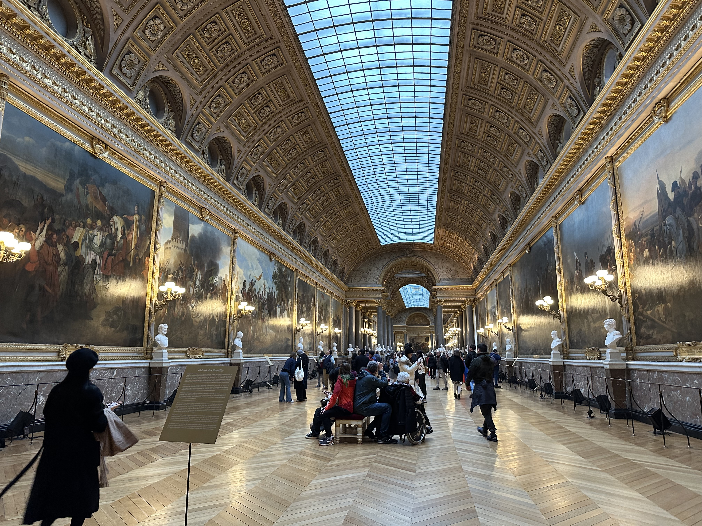
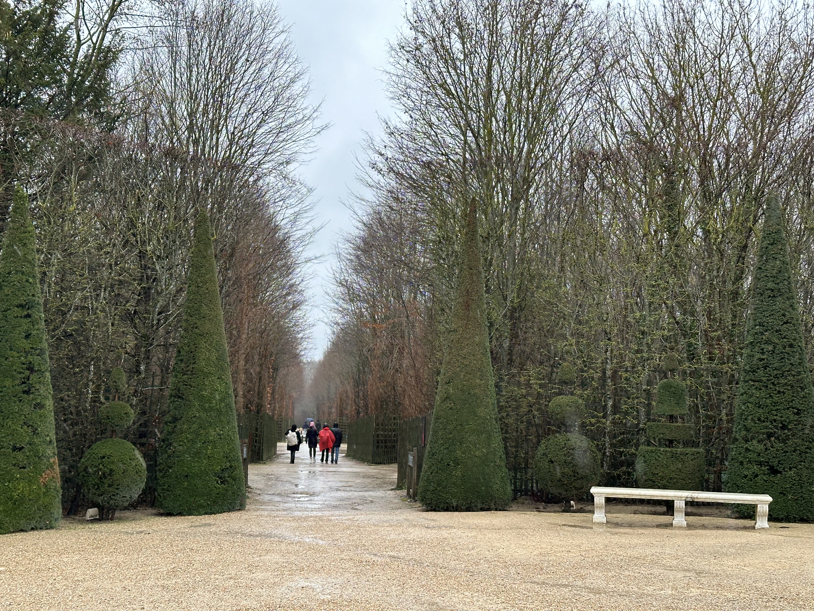

💡 凡爾賽行前懶人包
🛑 凡爾賽獨旅防雷與隱藏密技
🛡️必做防雷重點
- ▪強制定時預約：無論買哪種票（單買、Pass、套票），都必須先上網預約入場時段。
- ▪提前 1–2 週搶票：「旺季（4–10 月）」提前 2 週以上，淡季提前 1 週，避免現場沒票。
- ▪周一不開放：凡爾賽宮周一通常休館，避免跑空。
- ▪早點出發：建議 7:30 前從巴黎出發，9:00 開館時進場，避開大團。
- ▪回程車票先買好：傍晚回程 RER C 排隊人多，強烈建議去程時就將回程票買好。
- ▪前一天把午餐買好：省錢方便好選擇。凡爾賽宮真的很大，大部分餐廳離很遠又貴，午餐越快解決越好。
🔑隱藏密技（省錢＋省時）
- ▪博物館通票 (PMP)：可進主宮殿+大小特里亞農宮+花園。
- ▪避開大團動線：先走「宮殿→鏡廳→國王/后寓所→花園→特利亞農」較順暢。
- ▪中場休息：參觀完宮殿就很累了，可以在進花園前吃個簡單午餐，否則花園跟大小特里亞農宮又是體力的另一大考驗。
- ▪搭小火車/騎單車省腳力：在大特利亞農宮門口搭小火車 €5 回花園入口、或是線上訂票時加購 €7 租借單車。
- ▪住宿：凡爾賽鎮沒有青年旅館，獨旅建議直接住巴黎。
- ▪飲食：若來不及前一天買，也可以嘗試凡爾賽宮附近的法式薄餅，有甜有鹹且不貴！
🗺️ 凡爾賽必訪：2 大核心地標

1. 主宮殿 (Le Château)
✨ 鏡廳 (Galerie des Glaces)
長 73 公尺、17 面拱形鏡、頂部畫作描繪路易十四榮耀，最華麗。
建議停留: 約 10 分鐘👑 國王/王后寓所
展示路易十四至十六宮廷生活，必看王后的「睡房」。
建議停留: 約 40-50 分鐘⛪ 皇家教堂 & ⚔️ 戰爭畫廊
金碧輝煌的巴洛克風格教堂，與描繪法國歷代戰役的壯觀畫廊。
建議停留: 約 20–30 分鐘
2. 花園與莊園 (Jardins et Domaine)
🌲 凡爾賽花園 (Jardins du Château)
極致的法式園林、噴泉、雕塑、樹叢，音樂噴泉日時更是如夢似幻。
🏛️ 大小特利亞農宮 (Trianon)
粉紅大理石的大特利亞農是路易十四避暑地；小特利亞農則是瑪麗皇后的專屬世界，氛圍與主宮殿完全不同。
🦆 瑪麗皇后的鄉村小屋 (Hameau)
瑪麗皇后體驗田園生活的夢幻鄉村風莊園。
🚇 交通攻略：從 Paris 出發到凡爾賽宮
| 🚆 交通方式 | 🗺️ 路線說明 | ⏱️ 時間 | 💶 票價 |
|---|---|---|---|
| 最方便 RER C 線 | 從巴黎聖母院附近(Saint-Michel Notre-Dame)出發，找往「Versailles Château Rive Gauche」方向的列車。 | 約 40 分鐘 | 約 €2.55 (單程) Navigo 卡可直接刷 |
| SNCF 列車 L/N 線 |
L 線：Gare Saint-Lazare → Versailles Rive Droite N 線：Gare Montparnasse → Versailles Chantiers |
約 30–50 分鐘 | €2.55 |
| 171 路公車 | 從 Pont de Sèvres 站搭乘至 Arrêt Versailles Château。 | 約 40 分 | €2.05 |
從 Versailles Château Rive Gauche 出站，步行約 30 分鐘即可抵達宮殿。基本上就是跟著人群走，目標非常明顯不會迷路！
🚐 懶人玩法：從巴黎出發半/一日團
不想研究交通工具？只要記得集合時間，品質保證且有專車接送的一日旅遊團是最省心的選擇。
🎶 固定慶典：皇家音樂噴泉秀
常態音樂噴泉與夜間活動
(Grandes Eaux Nocturnes) 每年 6 月初 – 9 月中 (每週六 20:30–23:05)
✨ 6 月仲夏夜限定場次
- 🇫🇷7 月 14 日 法國國慶日： 固定加開夜間音樂噴泉場次
- 🎇8 月 15 日 聖母升天節： 特別煙火表演 (Nocturnes de Feu)
- 🎧9 月中下旬 電子音樂夜： 結合現代電音的夜間特殊場次 (Nocturnes Electro)
此活動包含在約 €35 的全景通票（Passport）中。若單買一般音樂花園門票約為 €15。
建議：單買音樂花園門票只能透過官方網站線上預訂。 🏛️ 進入官網查看音樂噴泉時刻與購票
🇫🇷 法國獨旅生存避雷箱
交通：說來就來的全國罷工日常
法國的罷工（Grève）是跨足全國的常態，從國鐵（SNCF）、國內航班到各大公立博物館，都可能合法且無預警參與。這在法國文化中不是「社會大亂」，而是日常生活的一部分。獨旅時若跨城移動遇到大罷工，千萬別在車站乾等。
文化：解鎖冷漠的神奇單字
許多人誤以為巴黎人高傲，其實是踩到了禮儀地雷。在法國，走進任何店家或餐廳若不先向店員打招呼，直接用英文提問或點餐，會被視為非常粗魯無禮。
飲食：免費水瓶暗號與免小費真相
不同於義大利強收桌費（Coperto），或是德奧地區「點水比點酒貴」的潛規則，法國法律規定餐館必須免費供應麵包與飲用水。此外，法國結帳金額已強制內含服務費（Service compris），獨旅用餐完全不需要留任何小費。

Bryan | Europe Solo Guide
「獨旅不是孤單，而是給自己一場完整的自由。」
熱愛穿梭在歐洲老城區的石板路上與壯麗群山間。目前已獨自走訪 41 個歐洲國家，致力於將複雜的交通、住宿與隱藏景點，轉化為有溫度的獨旅攻略。希望這篇文章能幫你省下找資料的時間，把精力留給旅途中的美好。
✉️ 聯繫我 / 合作邀約